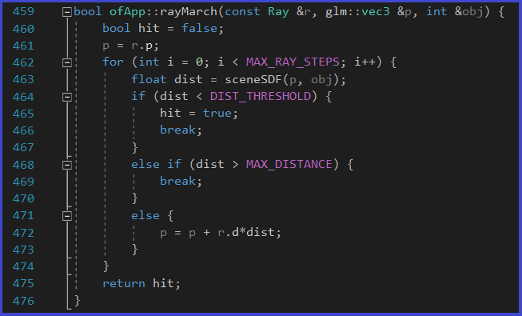
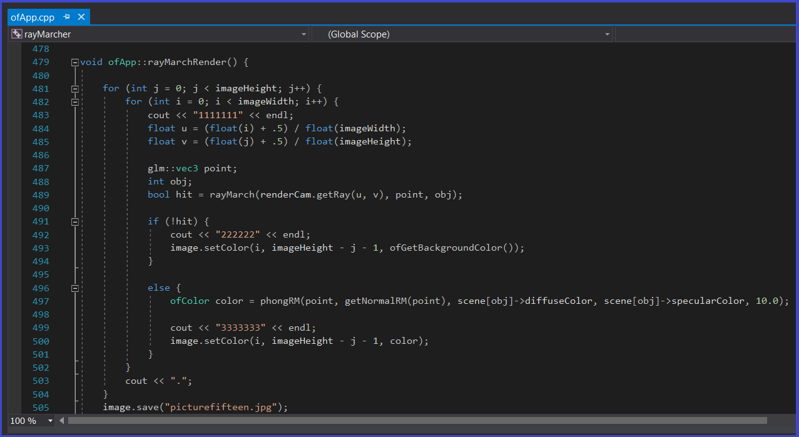

Ray Marcher Project
In 2014, I enrolled at De Anza College, located in Cupertino, California. This is where I began my career in Computer Science. From 2014 to 2019, I took nearly all the programming classes offered by the school. This included 3 courses in C++, 2 courses in Java, 1 in javascript, 1 in HTML/CSS, 1 in Assembly, and 2 in Linux/Unix. At De Anza, I obtained a liberal Arts-Science, Math and Engineering Associate's degree. I wasn't actually pursuing this, I simply obtained it by completing the courses I needed to transfer to San Jose State University.
In 2019, I transferred to San Jose State University to finish my Computer Science degree. The Upper division courses gave me experience working in Agile environments developing software. At SJSU, I took 1 course in PHP, 1 in javascript, 5 in Java (including android development), 2 in C++, 1 in C, 1 in C# (which included a project in Unity), and one course that included Haskell, Prolog and Scheme. I also took courses in relational databases, where I learned MySQL and SQLite.

On September of 2017, I joined IBM for an internship, having the position of a "Data Center Specialist". The first six months of my internship, I focused exclusively on maintaining and troubleshooting Linux servers. This part of my internship was merely in hardware. On February 2018, my internship took a different focus. I worked with entry and junior level developers to create 2 applications for IBM's data center. The first project required knowledge in Javascript (for the front-end), and Java for the backend. This project also required database schemas in MySQL. The second and more difficult project, was purely made with javascript, and required knowledge in Node.js. I participated in both projects and learned how to master all of the technologies involved.
On January 2018, I briefly returned to work with Linux servers, until March of that year. On March, I participated in the development of a large IBM project which focused in Java programming, using spring boot and REST APIs. This project was in an agile environment in a team of 10 developers. The project was finalized in late December of that same year, but continued to be updated every year.

In 2019-2021, my tasks at IBM have varied a lot, depending of the time of the year and according to the demands of the department I worked in. During those two years, I learned angular.js, used MySQL extensively, and was deeply involved in Java projects.